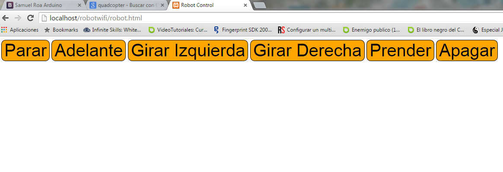
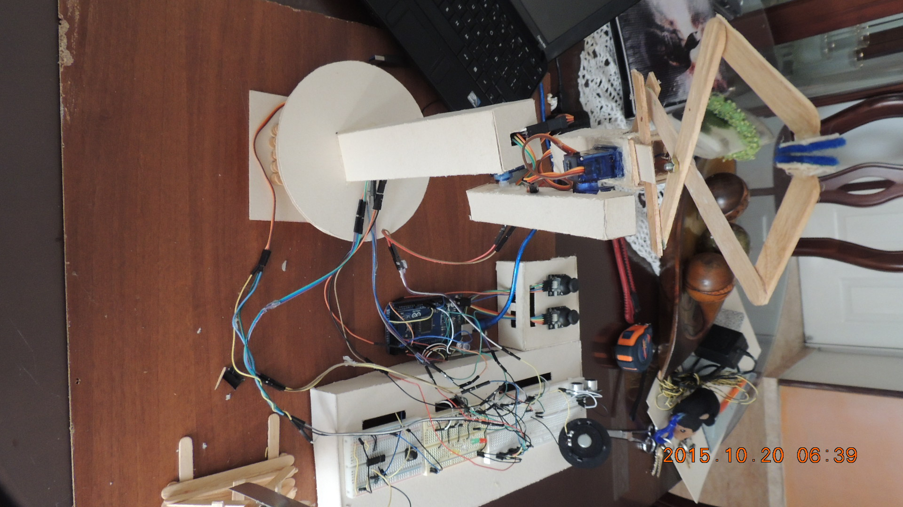
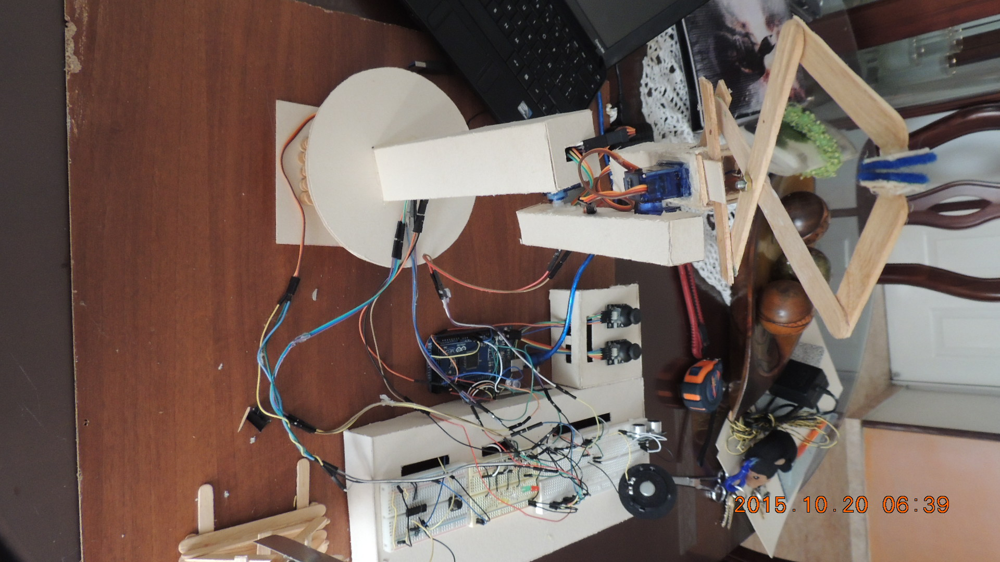
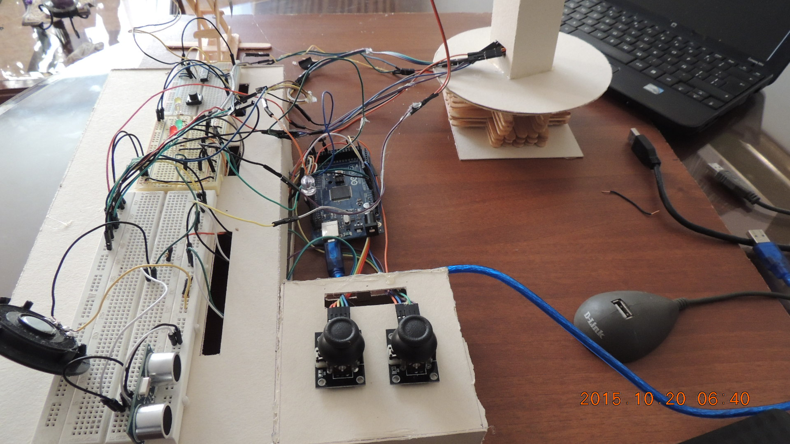
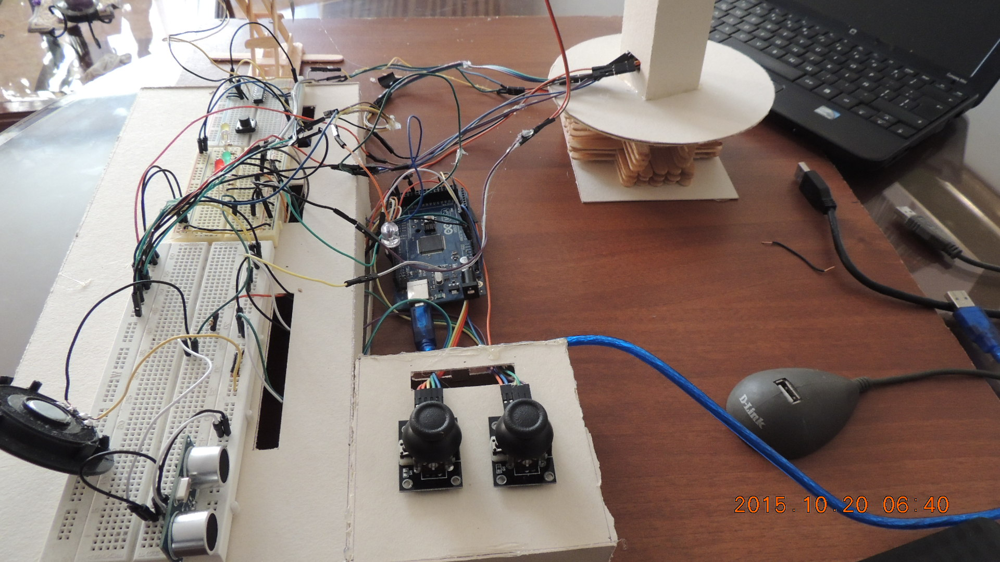

Arduino
Proyecto de Electronica
Arduino es una plataforma de hardware libre, basada en una placa con un microcontrolador y un entorno de desarrollo, disenada para facilitar el uso de la electronica en proyectos multidisciplinares. El hardware consiste en una placa con un microcontrolador Atmel AVR y puertos de entrada/salida.
Circuitos Electronicos(Fritzing)
Con esta herramienta, se puede disenr un circuito electronico de forma visual y amigable. En este grafico, se documenta, como se construyo el circuito de una oruga tamiya, para controlar los motores, usando un integrado L293D
Circuito del montaje del controlador de motor L293D con Arduino, sobre un tractor.

Circuito del controlador de motor L298N, con un Arduino UNO, y bluetooh. Montado sobre un tractor
Proyecto Robot con Piloto Autonomo
Oruga tamiya, para controlar los motores, usando un integrado L293D, se requiere Sensor Ultrasonico, para que pueda sensar obstaculos y controlar movimiento sin intervencion humana
Proyecto Arduino Controlando Robot via Bluetooth
Oruga tamiya, para controlar los motores, usando un integrado L293D, igual que el prototipo 1, pero ya no se requiere Sensor Ultrasonico, sino una antena Bluetooth, para controlar movimiento desde cualaquier dispositivo movil que tenga bluetooh
Proyecto Arduino Controlando LED via Wifi con Modulo CC3000 WiFi Breakout con Antena Integrada, Arduino MEGA y Display
Encendido y Apagado de LED, se utiliza una antena Wifi CC3000, para controlar el encendido desde un browser como Google Chrome, Internet Explorer, etc. Usando unos scripts, hechos con PHP, HTML y JQuery.
Desde un browser

Proyecto Robotino Prototipo 3! Con Fuente de Alimentacion LIPO de 2.2A y 7,4V
Proyecto Dia de la Ciencia GWMK!


 

 


Pagina de Control del Proyecto del Brazo Robotico
Esta es la pagina desde se interactua y controlan dispositivos de entrada y salida.
Documento que explica el Proyecto
Este documento explica con mayor detalle el Proyecto presentado el dia de la Ciencia.